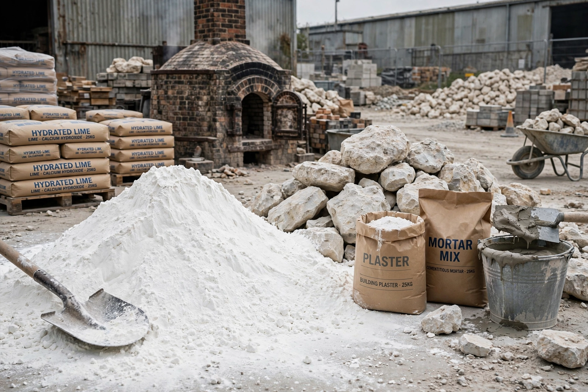

| Types | Quicklime (CaO), slaked lime Ca(OH)₂ |
|---|---|
| Source | Calcined limestone |
Lime is a calcium-containing inorganic material composed primarily of oxides and hydroxide of calcium. It is produced by heating limestone in a kiln — a process called calcination — and has been used since antiquity as a building material and chemical.
Heating calcium carbonate (limestone or chalk) above about 825 °C drives off carbon dioxide, leaving calcium oxide, or quicklime. Adding water produces calcium hydroxide, or slaked lime, in a strongly exothermic reaction. Slaked lime gradually reabsorbs CO₂ from air, reverting to calcium carbonate — the lime cycle.
Lime is used in mortar, plaster, cement and concrete; in steelmaking as a flux; in water treatment and flue-gas desulfurisation; in agriculture to reduce soil acidity (agricultural lime); and in food, paper, and chemical industries. Lime mortar predates Portland cement by millennia and remains valued in conservation.
Quicklime and slaked lime are caustic and can burn skin and eyes; the slaking reaction releases considerable heat.